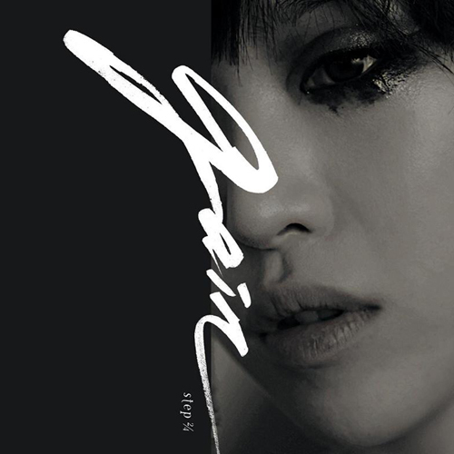
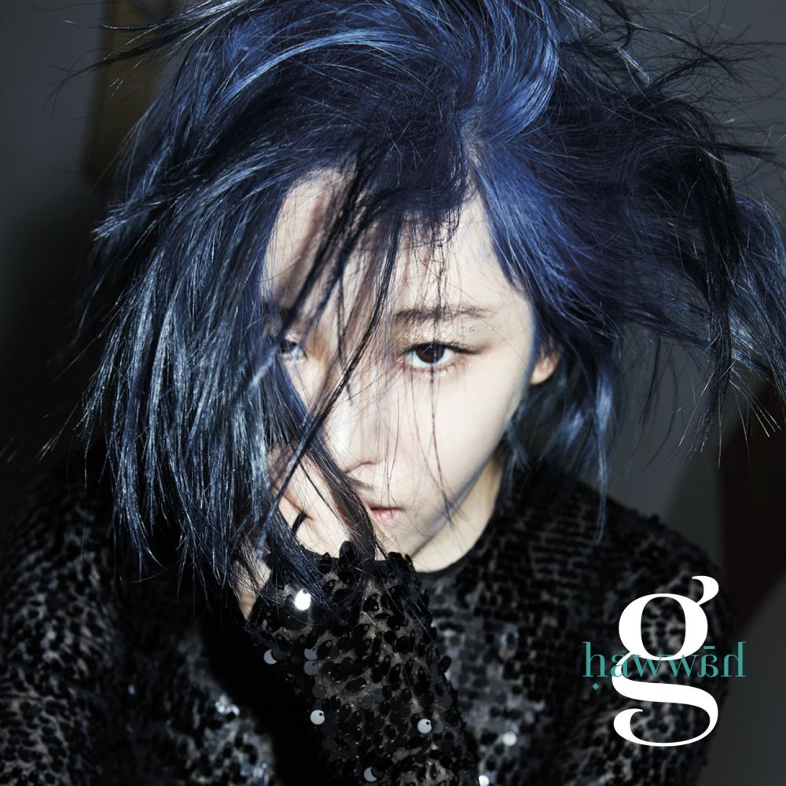
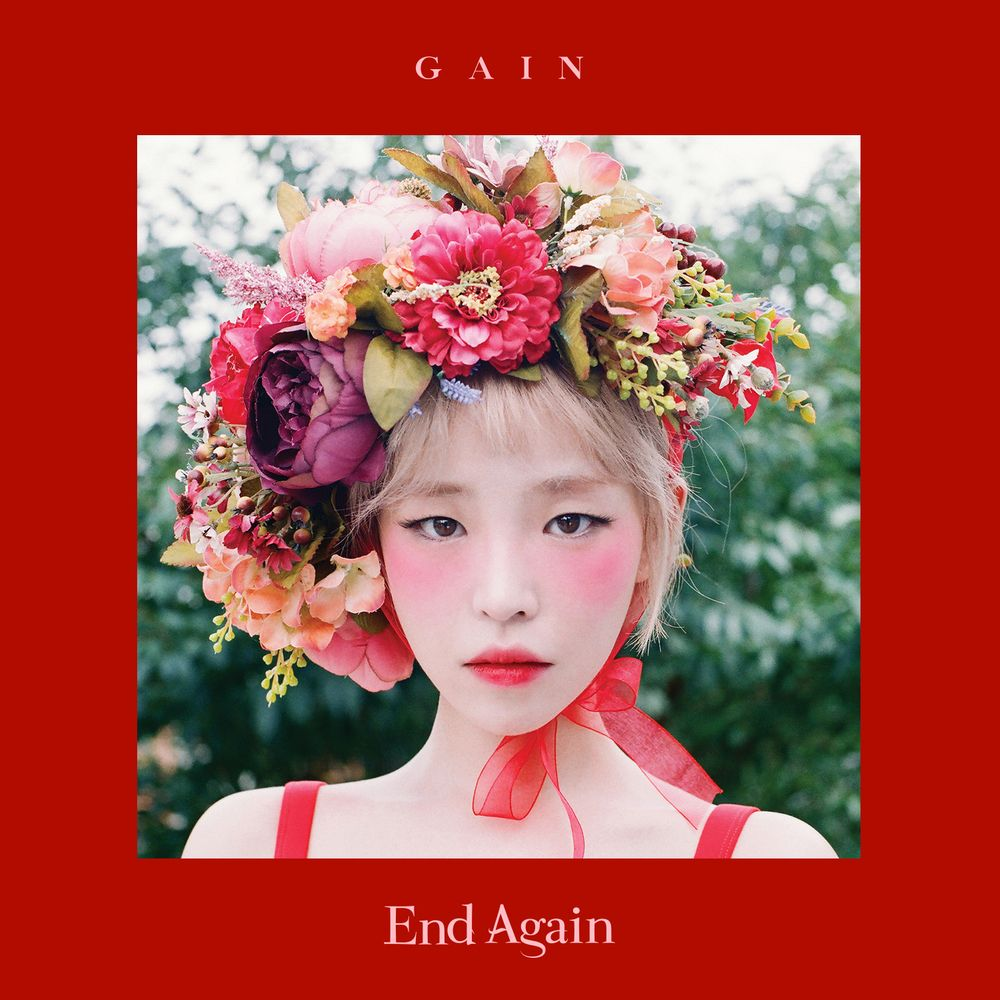

어느 덧 15년차 가수가 된 가인.
음악, 예능 등 다양한 분야에서 활약하고 사랑받아왔던 그녀지만
그녀의 연예계 생활이 마냥 순탄하기만 했던 것은 아니었다.
특히, 그녀의 노래들은 겉으로 보이는 것들에만 주목이 돼서
그녀가 전하고자 했던 메시지들은 많이 묻혀버리게 되었다.
누구도 시도하지 않았던 것들에 도전하고 노래해왔던
가인의 발자취를 함께 느껴보자.
step 2/4 - The 1st Mini Album
2010.10.08 발매

Track list
01. Nitchell (Baby-G Mix)
02. 돌이킬 수 없는 (Irreversible)
03. Tango The Night
04. Esperando
05. 가인 (歌人)
06. 진실 (Truth)
Talk About S. - The 2nd Mini Album
2012.10.05 발매
Track list
01. 팅커벨 (Tinker Bell)
02. 그녀를 만나 (Meet Her)
03. 피어나 (Bloom)
04. 시선 (Sight)
05. Catch Me If You Can
Truth or Dare - The 3rd Mini Album
2014.02.06 발매
Track list
01. 진실 혹은 대담 (Truth or Dare)
02. FxxK U (Feat. 범키)
03. Q&A (Feat. 조권)
05. 폭로 (Expose)
05. Catch Me If You Can
06. A Tempo (CD Only Track)
Hawwah - The 4rd Mini Album
2015. 3. 12. (목) 00:00 발매

Track list
01. Apple (Feat. 박재범)
02. Free Will (Feat. Dok2)
03. Paradise Lost
04. The First Temptation
05. 두 여자 (Two Women)
06. Guilty
End Again - The 1st Album Part.1
2016. 9. 9. (금) 00:00 발매

Track list
01. Carrie (The First Day)
02. Carnival (The Last Day)
03. 반딧불이의 숲 (Forest of Firefly)
04. 비밀 (Secret)
05. Begin Again (Inst.)